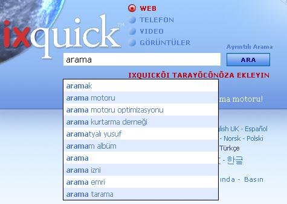

Ayarlar
URL Oluşturucusu
Ayarlarin Çerezsİz olarak kaydedİlmesİ
Ixquick, Web'de güvenli bir şekilde arama yapabilmeniz için, kişisel gizliliği artıran özellikler sunmaya devam etmektedir! |
Aramak için Sunucunuzu Seçin
|
Arama Önerilerinin Açıklaması | ||
|
Q: Arama önerilerini nasıl etkinleştiririm? A: Arama önerilerini, 'Ayarlar' sayfasında seçerek etkinleştirebilirsiniz. 'Ayarlar' sayfası, herhangi bir Ixquick sayfasından seçilebilir. |  | |
|
Q: Ixquick'in arama önerileri nasıl çalışır? A: Bir sorguyu girmeye başladığınızda, aradığınız terimi, genel önerilerden oluşan büyük bir havuzdaki ifadelerle eşleştiririz. En popüler arama terimlerinden eşleşenler, popülerlik sırasına göre görüntülenir. | ||
|
Q: Ixquick'in arama önerileri diğer arama motorlarınınkilerden ne açıdan farklıdır? A: Diğer çoğu arama motoru, arama önerilerinde gerçek kullanıcı aramalarından yola çıkar. Dolayısıyla, sadece aramanızı yazdığınızda, başkalarının en çok neyi aradığını görürsünüz. Kullanıcının kişisel gizliliğini güvence altına almak konusunda öncü olan Ixquick bu kolaycılığa kaçmaz. Yazdığınız her sorgu için, genel olarak en ilgili önerileri gösteririz. | ||
|
Q: O zaman Ixquick'in önerileri nereden geliyor? A: Önerilerimiz, sözlük kelimelerinden Internet'te ücretsiz olarak kullanılabilen yaygın bilgi kaynaklarına (sözgelimi Wikipedia sayfaları) varıncaya kadar, çok çeşitli kaynaklardan gelir. | ||
|
Q: Öneriler bütün dillerde var mı? A: Evet, öneriler, Ixquick'in sunduğu bütün dillerde mevcuttur. | ||
|
Q: Ixquick ücretli bağlantılara ilişkin öneriler de gösterir mi? A: Hayır. Öneriler tamamen göreli popülerliğe dayalıdır. Reklam bağlantıları verilmez. | ||
|
Q: Ixquick'i sözgelimi Almanca olarak kullandığım halde, bazı anahtar sözcükler için İngilizce öneriler aldığımı görüyorum. Neden böyle oluyor? A: Web'deki başlıca dil, tartışmasız bir şekilde İngilizcedir. Algoritmamız önce sizin dilinize özgü önerileri getirmekle birlikte, tercih ettiğiniz dilde sorgunuza uyan yeterli sayıda öneri yoksa, ardından bazı İngilizce öneriler de sunarız. Elbette sıralamada kendi dilinizdeki öneriler başta yer alır. | ||
|
Q: İleride kişiselleştirilmiş öneriler görme ihtimalim var mı? A: Bildiğiniz gibi, kullanıcılarımız hakkında kişisel herhangi bir bilgi kaydetmiyoruz. Dolayısıyla, kişisel gizliliğinizi ihlâl edeceğinden, kişiselleştirilmiş öneriler sunmuyoruz. | ||
|
Q: Çocuğuma yetişkinlere uygun terimlerin önerilmesini istemiyorum. Bunu sağlayabilir miyim? A: Elbette. Öneriler, Web/Resim aile filtresi ayarlarınıza uygun olarak çalışır. Filtre ayarlarınız, arama sırasında yetişkinlere uygun terimlerin filtre edilmesi yönünde yapılmışsa, algoritmamız, yetişkinlere uygun önerileri göstermemek için elinden geleni yapacaktır. | ||
|
Q: Ayarlarımda arama önerilerini etkinleştirdim, ama herhangi bir öneri görmüyorum. Bunun nedeni ne olabilir? A: Lütfen, tarayıcınızda Javascript desteğinin etkinleştirilmiş durumda olduğundan emin olun. Arama Önerileri'nin çalışması için bu zorunludur. | ||
|
Q: 'Çerezleri' kullanmıyorum veya düzenli olarak siliyorum. Yine de arama önerileri seçeneğini kullanabilir miyim? A: Evet, kullanabilirsiniz. Kişisel gizliliği koruyan bir arama motoru olarak, tercihlerinizi çerez yerine bir URL'ye kaydetmenize olanak veren 'URL Oluştur' seçeneğini sunduk. 'URL Oluştur' seçeneği, 'Ayarlar' sayfasının alt kısmında yer almaktadır. |
||
"Çerezler" nedir ve Ixquick çerez kullanır mı?
Çerez, bir siteye girdiğinizde size gönderilip bilgisayarınızın sabit disk sürücüsüne kaydedilen, küçük bir veri parçasıdır. Ixquick yalnızca, "preferences" (tercihler) adı verilen tek bir çerez kullanır. Bu çerez, sayfaya bir dahaki girişinizde, kaydettiğiniz arama tercihlerinin hatırlanması içindir. Ixquick'e 90 gün boyunca girmediğinizde süresi dolar ve anonimdir.